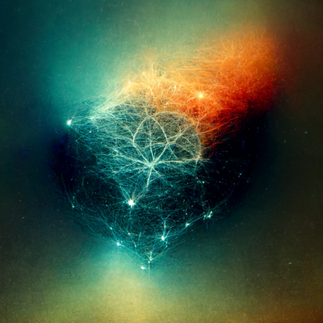

On AI killing art, and other fears
A few hours ago, a friend and ex-student of mine asked me this on twitter:
{kind=link}
Basically, what were my thoughts on the artists vs content-generation AIs debate.
I really wanted to answer in a couple of tweets. Believe me, I tried. But I can't, so instead of torturing him and any spectators with a kilometer-long twitter thread, I decided to make this a short-ish blog post :)
Disclaimer
My opinion on this topic is probably not the most objective one. I work with AI, I teach in a couple of university AI courses. I even do some AI projects for fun in my spare time.
But at the same time, I care deeply for the ethics of AI and its impact in the world. I'm not a blind technology worshiper, I really want AI to be a tool, used to build a better future for all, and I'm painfully aware that in its current forms it is already being misused a lot (concentrating power, amplifying discrimination, invading privacy, making people adicted to products, and so many other bad things). So I won't defend AI for the sake of AI progress.
Still, don't forget that I'm not an artist, and artists should have a voice in this debate too.
A misconception
Before sharing any opinions I need to dispel a common misconception: that these AI models are plagiarizing content from artists. I'll be using image generation as the main example, but the same applies to lots of content-generation AIs.
These AIs don't plagiarize (most of them, the amazing ones making the news at least). These AIs aren't memorizing, copying existing work and reproducing it as their own. That's simply not how they work. I won't go deep into that, but what you need to understand is that these AI models learn (concepts, styles, techniques, etc), and then generate novel content based on what they've learned.
The process is in many ways similar to how humans learn skills: the AI learns by watching a ton of examples, trying to do its own stuff, and receiving feedback on how good the stuff was. Given enough time, the AI model ends up being pretty good at the thing you wanted it to do.
Learning styles, concepts, techniques, and more from the contents (art) of others, to then be able to create your own novel art, was never considered “plagiarizing”. And it would be a VERY bad idea to try to classify that as plagiarizing. Basically because that’s how human artists work too, you would end up banning the artistic process itself, because no artist is born from the ether knowing how to create art, nor is any artist able to create a new branch of art from nothing. We humans always learn from others. And now computers too.
With that out of the way, now my opinion on the four biggest fears/discussions I’ve seen repeated multiple times:
1. AI art will destroy human art

I’ve seen quite a few people arguing that when computers can do art faster and more efficiently than humans, human art itself will die. There will be no more human artists, computers will replace that as they’ve replaced so many other manual tasks.
Honestly, I found this one hilarious. Mostly because people saying this sound like they have never spoken to a real, human artist.
Humans do art for lots of different reasons. Love, pleasure, to express feelings, to share ideas, to call for action, to relax, to improve themselves, to have fun, and so much more. People enjoy CREATING art, not just consuming it! If a computer can now create art too, so what? Most artists will keep doing art anyway because they feel amazing when doing their own art!
Would you stop eating ice cream just because a new computer can eat ice cream faster than you? How silly is that?
Human art won’t die. Stop panicking over that one.
2. AI art will destroy paid human artists
{kind=link}
This one might sound similar, but is not the same as the previous fear. Even though sometimes in discussions they’re both mixed together as one.
I absolutely believe human artists will keep doing art for the love of it. But there’s a catch: not all art/content is produced, and especially sold, just for the love of art itself. Some forms of content are produced and paid just for utilitary reasons… and those are at risk of some huge impact, in my opinion.
The person buying a painting out of admiration for the person creating it, or listening to a song for the deep connection they feel with the artist, will probably keep consuming their favorite human’s art even if the AI produced art is cheaper or more easily available. The human author is part of the reason they want to consume that particular art form, and the AI art isn’t replacing that human connection.
But the person buying a cartoon for an ad of a children’s toy? Or the person needing a background song for a youtube video? Or the person designing a christmas card for their company? Well, those will definitely buy cheap AI art instead of paying for expensive human handcrafted art. And I’m pretty sure AI art will be cheaper, and easier to get. Maybe even for free.
So, yes, there will be an impact on some artists' income, we can’t deny that. It’s not a new problem, we’ve had a similar problem in the past: radio vs local musicians, widespread movie theaters and tv vs theater actors, ice sellers vs widespread fridges, factory workers vs robots, and so on.
IMHO, this is not just a problem in art: AI and other forms of automation will keep replacing humans in lots of jobs. That trend is not going anywhere, and will probably even accelerate. So the sooner we evolve into a society where people don’t need a job to be able to eat, the better…
So, human artists disappearing? Not a chance. Human artists having trouble selling “utilitary” art? Yep, that will happen.
3. Permission to learn

Another big discussion being held in many places, relates to the basic question of the fairness (or even legality) of using other people’s art/content to train your own AI model. Even if the model doesn’t plagiarize the content, just the act of learning from it, some people argue, should require some form of compensation or permission at least. Even being able to prevent that from happening.
This, I think, is a well intentioned discussion with a terribly short-sighted proposal for a solution, that will absolutely backfire if implemented. And I think that because of two different reasons:
First:
Humans have always been able to learn from what they can see, for free. Yes, on many occasions you are required to pay to be able to access something, and then you can use that to learn (and I really hate that humanity is like that… I strongly believe knowledge should be free). But at least you are never required to ask for permission, or pay, to learn from something you have accessed (paid access or not). Once your senses perceive something, you are absolutely free to learn (or not!) from it, and no one can stop you. And gosh, I’m thankful that capitalism hasn’t yet destroyed that for us. Please, don’t lay the foundations for that to happen…
Second:
I know that people pushing these proposals are doing so to protect artists, and that’s a super noble goal. But requiring “permission/payment to learn” is absolutely not going to protect or help artists. Really. How do I know? Because as a society we already tried that solution, several times in different contexts, and it always failed astronomically.
We wanted to protect small inventors from big corporations using their inventions and benefiting from them for free. So we designed patents: “permission/payment to use your invention”. The result? Big corporations literally hoard thousands of patents and then use them to destroy smaller competitors. You have your patent and want to sue me? Good luck! I have an army of lawyers and 2896 patents which I’m pretty sure contain enough to sue you 10 times over.
We wanted to protect artists from big corporations using their art for free and benefiting from it (sounds familiar??). So we designed copyright: “permission/payment to use your art”. The result? Big corporations abuse their position to hoard legal ownership of art, which nowadays is almost never owned by the artists themselves, and then use that to squeeze all the money they can from anyone trying to share said art. Corporations make millions, the artists get pennies, the public is constantly fighting for fair use while corporations try to paywall or silence any kind of use, etc.
So, what do you think will happen if, to protect artists from corporations using their art to train models for free, we try to design some “permission/payment to train” process? Hint: corporations have lots of money, lots of lawyers, and lots of art ownership rights. Artists and the rest of us, don’t. It’s almost as if solving problems by “requiring money to do X”, always ends up benefiting those guys with lots of money instead.
4. The powerful getting more powerful
{kind=link}
Finally, there’s one last fear that I deeply share, because it’s my main fear with AI in general, not just for content generation: power keeps getting concentrated.
These AI models require a lot of money to train. The datasets are huge, the training process is incredibly consuming. Not to mention the work of so many (absolutely not cheap) specialists who do the research, and then productivize the models. So only big players are able to train the best models. Only big corporations or organizations can afford to do so. And the trend, while sometimes reversing a tiny bit, in general points towards that problem getting worse with every new generation of AI models: bigger models, more data, more money.
And at the same time, no one can deny the power of having these tools. From the new business models they enable, to the incredible advantages they might provide over traditional competitors. And then there are the darker use cases, like weaponizing realistically-sounding fake news generation.
Those two factors combined (cost required vs power gained), mean that we, as a society, continue walking a path in which the powerful are getting even more powerful, while the rest of us have less and less chances of reclaiming that power. Those who can train these models, will have a greater edge over the rest of society. And those are usually big corporations, of which the rest of society has very little control.
Again, this is not particular to AI content generation. This is a problem with AI in general. But I’ve seen people raising this question in the AI art discussions, and it’s a really fair point. And I don’t have an answer for it :(
Too long, didn’t read
Human art won’t die. But artists selling “utilitary” art should be worried. Requiring permission to train from art is going to backfire like crazy. And we keep giving more and more power to the already powerful, that’s bad.
And yes, of course the images in this post are AI generated ;)
Comments
Comments powered by Disqus